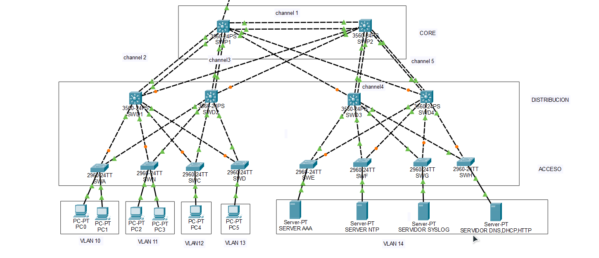

Topología y Dispositivos
Switches Capa 3
3 unidades (SWP1, SWP2, SWP3)
Modelo: Cisco 3560
Switches Capa 2
8 unidades (SWA a SWH)
Modelo: Cisco 2960
Switches Distribución
4 unidades (SWD1 a SWD4)
Estaciones de Trabajo
6 PCs
Servidores
- NTP (192.168.140.12)
- AAA (192.168.140.11)
- Syslog (192.168.140.11)
- DHCP, DNS, HTTP (192.168.140.10)


Figura 1: Topología completa del Data Center con servicios centralizados